제1 장. 서론
1.1 연구배경
전 세계적으로 평균 기온이 지속 상승함에 따라 국제사회는 2015 년 파리협정을 통해 기후변화에 대한 위기 의식을 널리 공유하게 되었다. 각 국가는 탄소 감축 목표를 설정 하면서 이를 달성할 방안 중 하나로 화석연료를 동력원으로 하는 내연기관차를 금지하였다. 이에 전기자동차 시장과 함께 후방산업인 이차전지 시장이 급성장하게 되었다(삼정KPMG 경제연구원, 2023).
<그림 1: 리튬 이차전지 시장 성장 추이 및 전망(출처: SNE Research)>
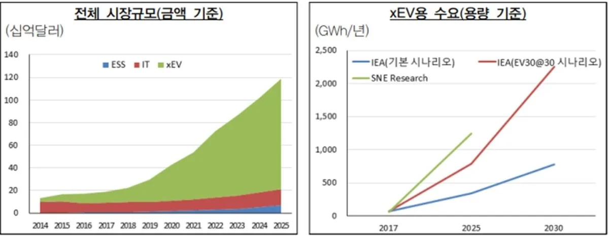
이차전지는 전기자동차 외에도 에너지저장시스템(ESS), 스마트폰, 인공위성, 태양광 전지 등 충·방전이 필요한 다양한 분야에서 광범위하게 활용되고 있다. 미래 산업의 발전 방향성이 전동화, 무선화인 점을 고려했을 때, 이차전지는 시장 성장성이 높을 뿐만 아니라 활용범위가 넓다는 점은 향후 이차전지 산업이 창출해 낼 부가가치가 막대함을 의미한다. 특히, 기후위기가 단기간 내 해결되지 않을 문제임을 감안할 때, 온실가스 배출량을 줄이기 위해 전기를 동력원으로 하는 전동화 경향성이 사회 전반에서 강화될 것이므로 이차전지 산업의 패권을 쥐는 국가가 향후 국제사회에서 강력한 경쟁 우위를 가지게 될 것은 자명한 일이다(삼정KPMG 경제연구원, 2023; LG 에너지솔루션, 2023; 정경윤 외, 2023).
이렇듯 이차전지 중요성이 크게 부각되면서 세계 각국은 자국 이차전지 산업의 경쟁력을 확보하기 위해 다양한 지원을 하고 있다. 미국은 기후 변화 대응 및 신재생에너지 전환을 내세우며 중국을 배제한 미국 중심의 이차전지 공급망 구축을 전면 추진 중이다. 2022 년 8 월에는 인플레이션감축법(Inflation Reduction Act, IRA)을 발의 하였는데, 법안의 주 목적은 전기차·배터리에 대한 인센티브를 제공하여 자국 내 산업을 육성·보호하고 Value-chain 내 중국을 배제하는 것이다. EU 는 핵심원자재법(Critical Raw Materials Act, CRMA) 제정을 추진하여 이차전지에 사용되는 주요 전략 원자재에 대한 역내 공급망 강화를 추진하고 있다(정경윤 외, 2023; 산업통상자원부, 2023).
<그림 2. 해외 주요국 이차전지 정책 동향(출처: 산업통상자원부 참고, 본인작성>
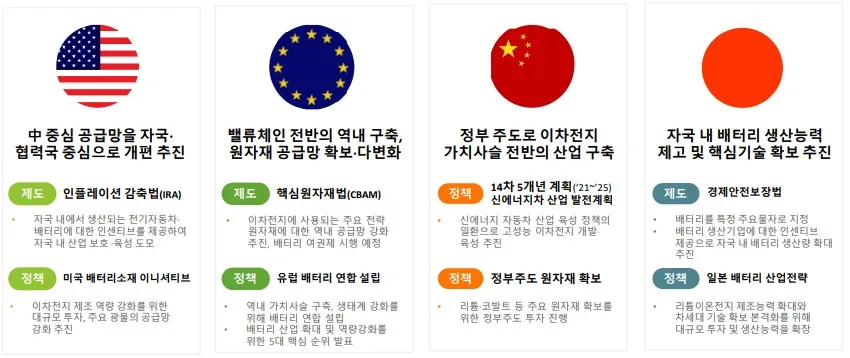
이러한 상황 속에서 우리나라도 이차전지 산업경쟁력 확보하고자 다각도로 노력하고 있다. 이차전지를 국가전략기술로 지정하고, ‘이차전지 전주기 산업경쟁력 강화 방안’ 등 육성 정책을 수립하였으며, 민관 역량을 결집한 ‘배터리 얼라이언스’ 출범을 통해 이차전지 산업을 육성하는 중이다(산업통상자원부, 2023).
1.2 연구주제 및 Research Question
고에너지 저장 특성을 지닌 이차전지가 전기자동차, ESS 등 다양한 용도에 적용됨에 따라 전지 발화 및 폭발 관련 문제 역시 지속적으로 제기되고 있다(중소기업기술정보진흥원, 2024). 화재의 주요원인은 이차전지 핵심 소재인 전해액이다. 전해액은 가연성 유기용매를 원료로 사용하기에 열폭주(Thermal runaway)로 인한 발화 위험성을 지나고 있다. 또한, 온도 변화로 인한 배터리 팽창이나 외부 충격에 의한 누액 등으로 폭발 위험이 상존한다(국가과학기술연구회, 2021; 한국전자통신연구원, 2021). 즉, 전해액은 이차전지에 꼭 필요한 소재이자 안전성과 밀접하게 연관되므로 중요성이 매우 높다고 할 수 있다.
상기와 같은 환경과 정책변화 속에서 우리나라 이차전지 전해액 기업은 어떠한 전략을 수립하여 전개하고 있을까? 우리나라 대표적인 배터리 전해액 기업으로는 엔켐, 솔브레인, 동화일렉트로라이트 등이 있는데 이중에서도 엔켐은 2012 년 전해액 시장에 후발주자로 진입하였음에도 단시간에 세계 4 위 국내 1 위의 점유율을 확보하였다.
<그림 3. 국내 주요 전해액 기업 현황(출처: 본인작성)>
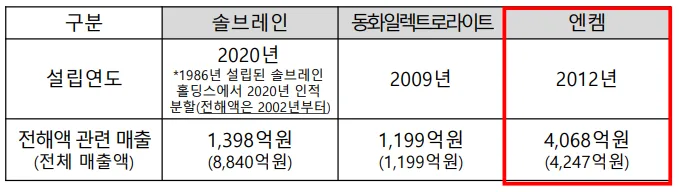
<그림 4. 엔켐의 최근 12 개년 매출 및 영업이익 현황(출처: 엔켐 IR 자료)>
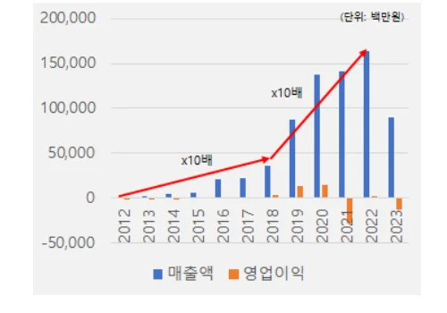
특히, 지난 10 년간 전해액 평균 성장률은 25%였지만, 엔켐의 평균 성장률은 85%로 압도적인 성장을 하고 있으며 이는 전해액 회사 중 성장률 1 위다. 이러한 엔켐의 성장은 점진적 혁신과 낮은 기술적 기회로 인해 후발주자 추격이 어려운 소재산업의 특성을 고려하였을 때, 독득한 사례(Unusual)로 볼 수 있다. 따라서 이번 사례 연구를 통해 소재산업 분야로 진출을 희망하는 중소기업이 나아갈 방향 및 전략에 대해 시사점을 제공하고자 다음과 같이 연구를 위한 Research Question 을 도출하였다.
Q1. (시장 진입기) 진입장벽이 존재하는 소재 시장에서 후발주자였던 엔켐은 어떻게 단기간 내 시장진입에 성공할 수 있었는가?
Q2. (시장 성장기) 시장 진입에 성공한 엔켐이 국내 1 위, 세계 4 위의 점유율을 확보할 수 있었던 요인은 무엇인가?
제2 장. 이론적 배경
2.1 이차전지 전해액
2.1.1 전해액 기술분석
한번 사용하면 충전할 수 없어 폐기하는 일차전지와 달리, 재충전이 가능한 반영구적 화학전지인 이차전지는 리튬계, 알카리계, 산성계 등이 있다. 이 중 작고 가벼우면서도 에너지 밀도, 장시간 사용 및 고속 충전 등 성능 면에서 가장 우수한 특성을 가진 리튬이온전지가 보편화되어 사용되고 있다(정경윤 외, 2023; 최윤호, 최형석, 2023; 비피기술거래, 2024).
<그림 5. 리튬이온배터리 구조(출처: 삼성 SDI)>
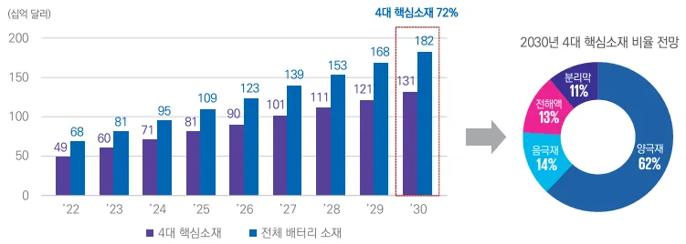
<그림 6. 배터리 4 대 핵심소재 비율 전망(출처: SNE Research)>
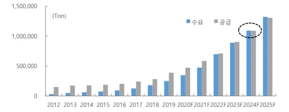
<표 1. 전해액 구성요소(출처: 본인작성)>
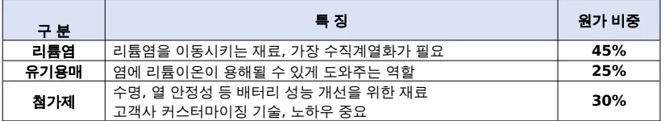
리튬이온전지는 양극재, 음극재, 분리막, 전해액 등 크게 4 개 핵심소재로 구성되어 있는데, 양극재는 배터리에서 양극의 특성을 나타내는 활물질이며 리튬 코발트 산화물을 기본으로 니켈과 다른 금속 원소가 더해져 만들어진다.
음극재는 양극에서 나온 리튬이온을 저장 및 방출하여 전류를 흐르게 하는 역할을 한다. 음극재와 양극재 사이에 위치하여 배터리 안전성을 유지하는 물질은 바로 분리막인데, 분리막은 미세한 구멍을 통해 리튬이온의 이동을 돕고 양극과 음극의 물리적 접촉을 차단하는 역할을 한다. 마지막으로 전해액은 양극과 음극 사이에서 리튬이온 이동통로를 제공하는 매개체 역할을 한다(정경윤 외, 2023; 최윤호, 최형석, 2023; 비피기술거래, 2024).
앞서 살펴본 4 대 핵심 소재가 리튬이온전지 원가의 대부분(72%)을 차지하는데, 이 중 본 사례연구 대상인 전해질은 이차전지 원가의 약 13%를 가진다. 전해질은 원료에 따라 액체전해질(전해액), 겔 폴리머 전해질, 고체전해질로 구분된다. 현재 우수한 이온전도도 특성의 액체전해질이 상용화되어 있으나, 액체전해질의 휘발성, 인화성, 누액 등에 따른 화재·폭발사고로 안전성에 대한 사회적 관심이 증가함에 따라 고체전해질의 상용화를 위한 기술개발이 활발하다(최윤호, 최형석, 2023; 안재형 외 2020). 다만, 고체전해질은 최소 2025 년 이후에나 상용화가 가능해 질 것으로 예상되므로(비피기술거래, 2020), 본 사례연구에서는 가장 보편화된 액체 전해질(전해액)을 전제로 하여 모든 용어의 사용과 내용이 고찰될 예정이다.
전해액은 리튬염, 유기용매, 첨가제의 배합으로 제조되며, 유기용매에 리튬염을 용해한 후 난연성, 저온성능, 내전압성, 급속충전 등의 기능성 강화를 위해 유·무기 첨가제를 소량 추가하여 혼합시킨다. 전해액의 성능은 전극재 구성에 따라
재료의 선택 및 배합비율 등이 결정되므로 리튬이온전지 제조업체와 공동개발을 진행한다. 소형 IT 제품의 경우 짧게는 3~4 개월 개발 기간이 소요되고 xEV 용 전해질은 1 년이 넘게 제품을 개발과 평가를 진행한다(SNE Research, 2020).
전해액의 주요 요구조건으로는 우수한 리튬이온전도도, 화학적 안정성(부반응 억제), 넓은 작동온도 범위 및 난연성 등이 있다(LG 에너지솔루션, 2023).
이온전도도는 전지의 고속 충·방전 특성과 관계가 깊으며, 극서 또는 극한 지역에서 리튬이온전지 사용이 가능하도록 넓은 온도 범위를 보유해야 한다.
또한, 리튬이온전지 작동 과정에서 전해질의 부반응으로 인해 기체가 발생되거나 전극 계면에 피막이 과다형성되면 전지의 안전성, 출력, 내구성 등에 문제를 야기할 수 있으므로, 고전압 및 고온 조건에서도 화학적으로 안정된 전해질 개발이 필요하다(중소벤처기업부, 2024).
2.1.2 전해액 시장분석
리튬이온전지 전해액 산업의 특징은 크게 3 가지로 정리할 수 있다. 첫째, 기술집약적 산업이다. 고순도 유기 화합물질의 배합이 요구되는 전해액 특성을 고려하여 불순물의 효과적 제거가 필요하고, 첨가제 개발을 통한 전지 성능 향상이 요구된다. 둘째, 규모의 경제가 작용하는 산업이다. 전기자동차, 에너지저장시스템(ESS) 등 중대형 리튬이온전지 산업에서 큰 폭의 수요가 전망됨에 따라 전해질 제조업체들이 생산능력을 경쟁적으로 확대하여 대규모 공급망 및 가격경쟁력을 확보하려는 전략을 수립하고 있다. 마지막 셋째, 전방산업에 대한 의존도가 높은 산업이다. 배터리 제조사들은 에너지 밀도 증가를 위한 소재 개발 시 공동 기술개발을 필수적으로 한다. 최종 고객사인 자동차 OEM업체에서도 인증을 요구하고 있어 협력이 점차 중요해지고 있다. 따라서 전해액 제조사는 전방산업인 배터리 제조업체의 요구에 적극 대응하기 위해 뛰어난 R&D 능력이 요구된다. 또한, 시간 경과에 따른 변질, 휘발, 화재, 폭발 등 운송 중 사고 위험성이 높아 고객사와 근접한 위치에 생산공장 구축이 필요하다.
<그림 7. 글로벌 전해액 수요-공급 전망(출처: SNE Research)>
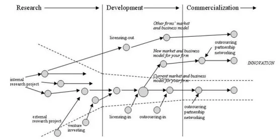
전해액 시장규모는 2019 년 29 억 달러에서 연평균 13.6% 증가하여 2021 년 37 억 달러이며, 이후 연평균 21.7% 증가하여 2026 년 99 억 달러 규모로 전망된다. 세계 전해질 지역별 시장규모는 2021 년 기준 아시아 및 태평양 지역이 24 억 달러로 가장 크고, 북미와 유럽 지역이 각각 6 억 달러 수준이다
(MarketsandMarkets, 2020). 전해액 수요는 2024 년 공급을 넘어설 것이며 고기능성 전해액 시장은 더욱 공급 부족 현상이 지속될 것으로 전망하고 있다
(SNE Research, 2020).
2.2 제품혁신과 공정혁신
제품혁신(Product Innovation)과 공정혁신(Process Innovation)은 1975 년 James M. Utterback 과 William. J. Abernathy 이 기업 발전 단계에 따라 혁신의 특징과 종류를 구분하여 제시한 개념이다. 제품혁신이란 새로운 지식이나 기술을 활용하거나 기존의 지식이나 기술을 새롭게 조합하여 신제품이 새롭거나 개선된 상태를 의미한다. 따라서 제품혁신을 통한 신제품은 기업이 이전에 생산하였던 제품보다 새롭고 상당한 차이를 가지고 있어야 한다. 반면, 공정혁신은 기술적 변화 혹은 장비나 소프트웨어의 변화를 통하여 새롭거나 많이 개선된 제품 생산 공정 방법을 의미한다. 공정혁신을 통하여 기업은 제품의 단가(Unit Costs)를 줄이는 효과를 얻을 수 있고 제품의 질을 향상시킬 수 있다. 제품혁신과 공정혁신은 [그림8]과 같이 유동기, 전환기, 구체기로 이어지는 발전의 단계에 따라 그 정도가 달라진다.
<그림 8. Innovation and stage of development
(출처: James M. Utterback, William. J. Abernathy.,1975)>
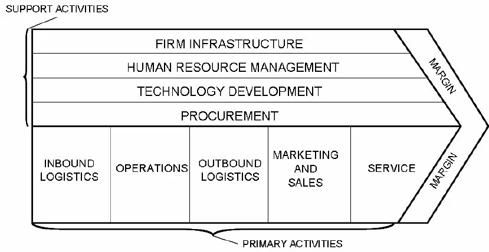
유동기(Fluid Phase)는 연구개발 중이거나 제품이 개발되어 상용화된 초기 단계로써 제품의 성능극대화에 초점을 두고 있는 신제품 관련 기술을 의미한다. 따라서 신제품의 설계·고성능 제품의 생산 등이 요구되며 시장규모가 작고 생산공정의 변동이 심하며 최초의 설비투자가 많으므로 자동화 등을 통한 효율적인 생산공정의 추구나 원가절감 위주의 생산활동은 바람직하지 않다. 그러므로 유동기는 제품특성과 관련된 생산활동에 중요성을 두게 되며 기술개발 투자가 많이 이루어지게 되는 단계다(김헌, 1999).
전환기(Transition Phase)는 제품의 설계나 연구개발이 어느 정도 완성되고 본격적인 생산 및 판매에 들어가는 단계이다. 따라서 제품특성과 관련된 생산활동은 점차 감소하고 효율적인 생산공정의 구축을 위한 활동이 점차 증가한다. 엄격한 공정통제와 공정개선 등의 활동이 주로 이루어지는 단계로서 규모의 경제를 실현하거나 자동화 등을 위한 설비투자가 가장 많이 이루어진다. 또한 표준화된 제품을 생산하기 위한 지배적인 제품이 등장하게 된다(김헌, 1999).
구체기(Specific Phase)에 들어서면 제품특성이나 공정관리에 대한 투자는 매우 작고 대량생산 및 자동화에 의해 원가를 낮춤으로서 가격경쟁력을 갖추는 것이 가장 중요하게 된다. 이 단계에 이르러서는 대부분의 제품이 매우 표준화되어 있으므로 제품의 성능이나 기능을 통한 경쟁보다는 가격이나 고객에 대한 서비스를 통해서 경쟁할 가능성이 높다. 따라서 원가를 줄이고 생산성을 높이려는 활동이 가장 요구되며 이 단계가 지나면 제품은 쇠퇴기에 접어들고 시장에서 사라지거나 새로운 기술이나 제품의 효용을 발견하면 재성숙기에 들어서게 된다(김헌, 1999).
2.3 Open Innovation
Open Innovation 이론은 美 UC 버클리 대학의 체스러버(Chesbrough) 교수가 제시한 개념으로 ‘기업이 혁신을 가속화시키기 위해 지식의 유입(inflow)과 유출(outflow)을 적절히 활용하며, 혁신을 외부에서 활용하여 시장을 확대하는 것’을 의미한다.
<그림 9. 오픈 이노베이션 패러다임(출처: Chesbrough et al., 2006)>
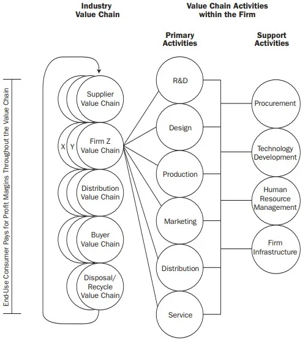
Open Innovation 은 외부의 기술과 자원을 내부화하는 Inbound 혁신, 내부의 기술과 자원을 외부로 보내는 Outbound 혁신으로 구분된다. Inbound Open Innovation 은 기술혁신에 필요한 기술, 지식, 정보 등을 인수하거나 기업외부의 공급업자, 고객, 그 밖의 협력관계에 있는 조직들과 공동개발을 통하여 획득함으로써 혁신성을 증가시키는 활동을 의미하며, Outbound Open Innovation 은 기업이 보유한 지적재산권 또는 브랜드 등을 사업화하는데 더 적합한 외부조직을 탐색하여 판매 또는 제공을 통하여 혁신성을 증가시키는 활동을 의미한다. 즉, Open Innovation 은 기업이 연구, 개발, 상업화에 이르는 일련의 혁신 과정을 개방하여 외부 자원을 활용함으로써 혁신의 비용을 줄이고 성공 가능성을 제고하며 부가가치 창출을 극대화하는 혁신전략으로 이해할 수 있다.
2.4 Industry Value Chain
Value Chain 은 기업의 부가가치 활동 파악을 통해 경쟁우위를 분석하기 위한 일반화된 방법론으로 Michael Porter 에 의해 정립되어 지난 30 여 년 넘게 널리 사용되어 온 전략경영 개념이다(Porter, 1985; 2008). Poter 는 기업이 제품 또는 서비스를 생산하기 위해 원재료, 노동력, 자본 등의 자원을 결합하는 과정에서 부가가치가 창출되는 것을 Value Chain 이라는 모델로 정립하면서 재화나 서비스 생산활동의 직접적 관계 여부에 따라 주 활동(Primary activities)과 지원활동(Support activities)으로 구분하였다. 즉, 기업의 주요활동들을 구조화해 보여줌으로써 기업의 장단점을 파악하고 이를 바탕으로 기업 경쟁우위를 파악하여 이익 극대화 전략을 구상하는 것이다.
<그림 10. Value Chain Model - Firm level(출처: Poter., 1985, 2008)>
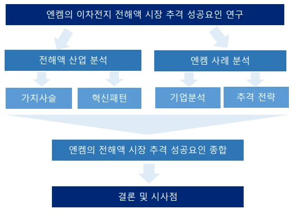
Shank and Govindarajan(1993)은 Poter 의 Value Chain 에 대한 개념적인 틀을 산업부문에 확대 적용한 Industry Value Chain 개념을 제시하였다. Industry Value Chain 은 원자재부터 최종 소비자, 제품 폐기와 재활용까지 산업 내 모든 가치 창출 과정을 포함하는 것으로 기업 단위의 가치사슬을 넘어 산업 차원의 개념으로 볼 수 있다. Joseph G. San Miguel(1996)은 산업차원의 수직적 연계 분석을 통해 산업 전반에 걸친 모든 업스트림과 다운스트림 과정에서의 Cost Driver 를 진단하고, 지속가능한 경쟁 우위를 위한 기회를 평가하였다.
<그림 11. Value Chain Model - Industry level(출처: Joseph G. San Miguel.,
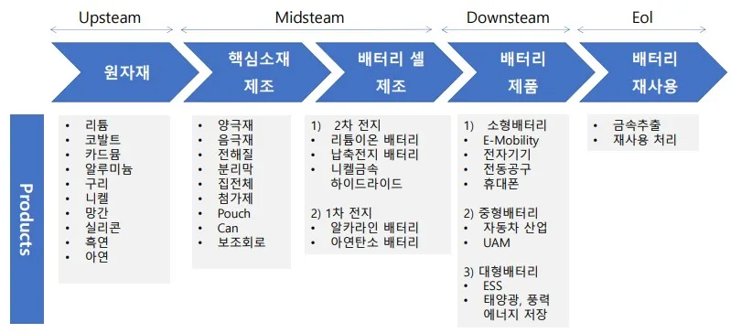
1996)>
제3 장. 연구 흐름
전해액 후발 기업인 엔켐이 솔브레인과 동화일렉트로라이트를 제치고 어떻게 단시간 내 국내 1 위, 세계 4 위의 점유율을 달성했는지 알아보기 위해 <그림12>와 같이 연구를 진행했다. 전해액 산업과 엔켐 기업 사례를 분석한 내용을 바탕으로 전해액 시장 추격 성공 요인을 도출하였다.
<그림 12. 엔켐 전해액 시장 추격 성공요인 연구흐름(출처: 본인작성)>
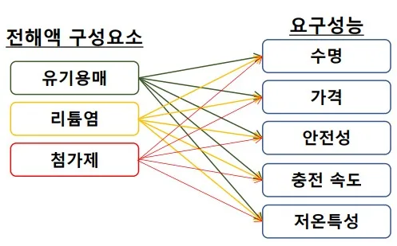
<그림 13>은 이차전지 가치사슬을 나타낸다. 이차전지 가치사슬은 가장
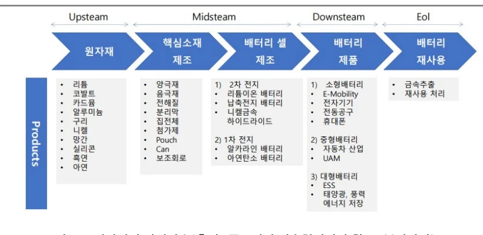
제4 장. 전해액 산업 분석
4.1 전해액 가치사슬 분석
후방산업인 광산·제련업부터 양극재, 음극재 등을 만드는 소재 산업, 소재를 활용해 리튬이온전지를 만드는 이차전지 산업, 전기를 활용해 전자기기·전기차 등을 만드는 제조업, 니켈·코발트·리튬 등의 희귀 금속을 추출하는 사용후 배터리 재활용 산업 등이 있다. 리튬이차전지 산업은 후방산업의 기술개발을 토대로 전방산업의 신규 시장선점과 같은 연쇄효과가 나타나는 특징을 가진다. 소재 경쟁력 확보가 중요하며 국내외 주요 이차전지 기업들 또한 소재 분야의 기술 경쟁력 개발에 집중하고 있다(중소기업기술정보진흥원, 2024). 전해액은 이러한 이차전지 가치사슬 중 소재 산업군에 포함된다.
<그림 13. 이차전지 가치사슬(출처: 중소기업 기술혁신전략 참고, 본인작성)>
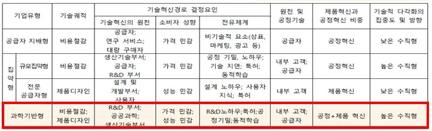
가치사슬 분석에 따라 전해액의 아키텍처를 살펴보고자 한다. 제2 장에서 살펴본 바와 같이 전해액 제조기업은 고객사 요구 사항에 맞춰 유기용매, 리튬염, 첨가제를 전지 개발 스펙에 커스터마이징(Customizing)한다. 이후 최적 조합 비율을 찾으면서 각 구성요소에 대해 세부 미세 조정을 지속적으로 진행한다(중소기업기술정보진흥원, 2024). 즉, 전해액 제조기업은 전방산업인 리튬이온전지 제조기업의 요구에 적극 대응하여 적합한 특성을 갖춘 전해액 설계 및 생산역량을 갖추는 것이 중요하다. 반면, 리튬이온전지에 필요한 성능으로는 주행거리, 가격, 안전성, 충전 속도, 수명 향상, 저온 특성 등이 있다.(Malhotra et al. 2021)
<그림 14. 전해액 공정 아키텍처(출처: 본인작성)>
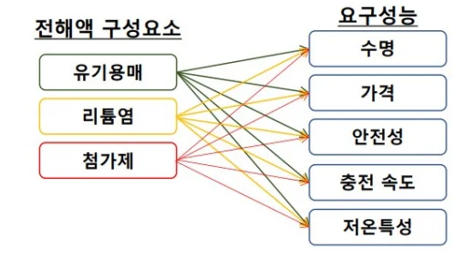
전해액의 구성요소와 리튬이온전지에 요구되는 성능간의 관계는 <그림14>와 같이 나타낼 수 있다. 리튬이온전지에서 요구되는 성능은 전해액의 구성 요소 간의 설계 파라메터를 상호 조정해가야지만 실현 가능하기 때문이다. 따라서, 전해액의 아키텍처는 미세조정형(Integral) 형으로 볼 수 있다.
<그림 15. 배터리 규격별 특징(출처: 중앙일보)>
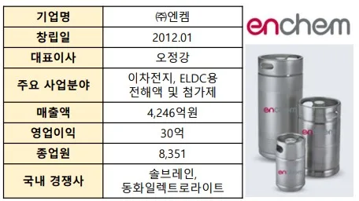
<그림 15>는 전해액 전방산업인 배터리 규격 별 특징을 보여준다. 배터리는
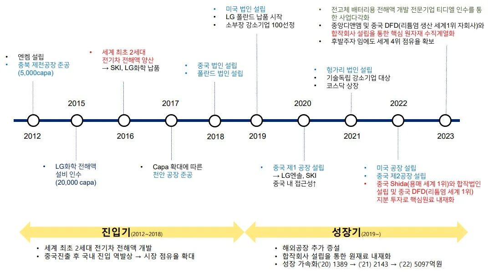
제조사에 따라 배터리 규격(원통형, 파우치형, 각형)이 다르고, 규격 별 성능에 따라 양극재, 음극재, 전해액, 분리막 등의 핵심소재 배합이 달라지며, 핵심소재 배합률은 배터리 제조사의 경쟁력으로 외부에 공개되지 않는다. 따라서, 배터리 개방 범위를 고려했을 때, 배터리 소재는 표준화 되어 있지만, 소재의 배합비율 등은 동종업계 다른 회사와 공유하지 않는 특성이 있으므로 전해액은 폐쇄형 아키텍처로 볼 수 있다.
4.2 전해액 산업 혁신 패턴 분석
앞서 살펴본 산업 분석을 바탕으로 전해액 산업이 어떠한 혁신패턴을 보이는지 파빗 분류(Pavitt Taxomomy)와 기술레짐(Technology Regime)을 통해 살펴보았다. 우선 기술혁신을 유형별로 나눈 파빗 분류에 따르면 전해액은 대표적인 화학산업으로 과학기반형에 속한다. 과학기반형은 주로 기업 내부의 연구개발과 대학 및 정부연구소 등으로부터 얻은 기초과학을 혁신의 원천으로 하고 있다. 즉, 내·외부의 다양한 연구 참여자와 협업을 통한 개방형 혁신(Open Innovation)을 적극 도모하는 것이다. 또한, 고객이 가격과 성능에 모두에 민감하기 때문에 제품혁신과 공정혁신이 복합적으로 나타난다는 특징이 있다.
<표 2. Pavitt 분류에 따른 전해액 산업 분류(출처: Pavitt, K., 1984)>
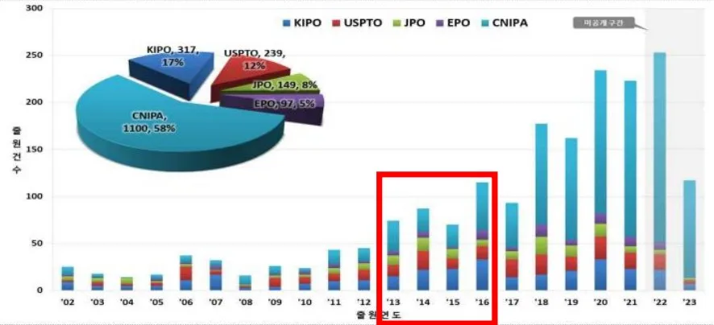
다만, 파빗 분류는 산업별 혁신 패턴 차이를 보여줄 뿐 차이의 원인에 대해서는 깊이 있는 설명을 제시하고 있지 않다(김석관, 2005). 이에 기술레짐을 활용하여 전해액 분야 혁신 패턴의 원인을 분석해 보았다. 전해액 산업은 2016 년 이후 신규 진입한 기업이 없다는 점에서 기회성이 낮으며, 국가전략산업인 이차산업의 핵심 소재로 대부분의 지식이 ‘대외비’로 지정하여 지식 파급이 제한되어 있다는 점에서 전유성이 높다고 볼 수 있다. 또한, 전해액은 화재, 폭발 위험으로 시장에서 검증된 기존기업에 매우 호의적인 환경이라는 점에서 높은 축적성을 보인다. 이를 종합해 봤을 때, 전해액 제조 기업의 혁신은 ‘점진적 혁신’ 패턴을 보인다는 것을 확인할 수 있었다.
<표 3. 기술레짐에 따른 전해액 산업 혁신패턴(출처: Malerba & Orsenigo., 1997)>
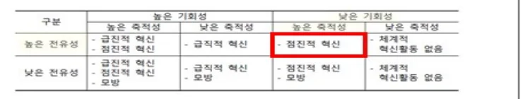
파빗분류와 기술레짐으로 분석한 결과를 종합해 봤을 떄 전해액 산업은 내·외부의 다양한 혁신 참여자와 협업을 통한 개방형 혁신(Open Innovation)을 바탕으로 제품혁신과 공정혁신이 복합적으로 나타나며, 점진적 혁신의 패턴이 나타남을 알 수 있었다.
제5 장. 엔켐 사례 분석
5.1 기업분석
엔켐은 2012 년 1 월에 설립되어 이차전지, ELDC 용 전해액과 첨가제를 제조, 판매하고 있는 회사다. 2023 년 기준, 약 4,246 억원의 매출액과 30 억원의 영업이익을 달성하였으며, 국내외 8,531 명의 임직원을 보유하고 있다.
<그림 16. 엔켐 기업개요(출처: 본인작성)>
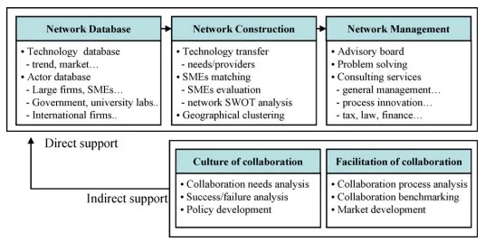
엔켐은 2012 년 5,000 톤 capa 의 제천공장 설립을 시작으로 시장에 진입하였고, 2015 년 LG 화학의 20,000 톤 capa 의 전해액 장비를 인수하여 사업을 확장하기 시작했다. 창업초기에는 가장 큰 배터리 시장을 가지고 있는 중국시장에 먼저 진출하여 다양한 레퍼런스를 쌓은 후 한국시장에 역진출하는 전략을 선택하여 시장을 확대해 나감과 동시에 기업부설연구소를 중심으로 끊임없는 기술개발을 통해 2016 년 세계 최초로 2 세대 전기차 전해액 양산에 성공한다. 2018 년 중국과 폴란드, 2019 년 미국, 2021 년 헝가리 법인 설립 및 현지 공장 운영 등을 통해 글로벌 밸류체인을 구축하였으며, 2022 년 전해액 핵심원료인 용매, 리튬염 회사인 중국 DFD 과 SHIDA 에 대한 지분투자 및 JV 설립을 통해 전해액 핵심 원자재를 내재화하였다. 2023 년부터는 폐NMP 시장 진입을 통해 사업을 다각화하였고, 차세대 배터리로 불리는 전고체 배터리용 전해액 개발 전문 기업인 티디엘을 인수하여 전해액 제조 기업으로써 포지셔닝을 강화하고 있다. 그 결과 엔켐은 한국의 3 개 전해액 업체 중 가장 후발업체임에도 불구하고, 연 평균 성장률(CAGR) 85%로 전해액 시장 평균성장률 26%의 3.2 배가 넘는 성장률을 기록하며 한국을 대표하는 가장 큰 전해액 업체로 성장하였다.
<그림 17. 엔켐 발전 역사(출처: 엔켐 기업공시 및 IR 자료)>
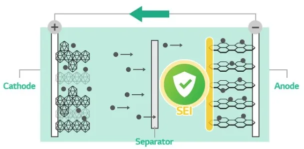
5.2 시장 진입기: 고도의 흡수역량을 바탕으로 한 Open Innovation
5.2.1 중간 매개체를 통한 특허이전
엔켐이 창업한 시기인 2010 년대 초반, 이차전지의 사용 범위가 노트북, 휴대폰과 같은 소형 전자 기기에서 전기자동차, 에너지저장시스템(ESS) 등으로 확대됨에 따라 전해액 관련 특허도 급격히 증가하였다.
<그림 18. 전해액 관련 연도별·국가별 특허출원 동향(출처: 중소기업기술정보진흥원)>
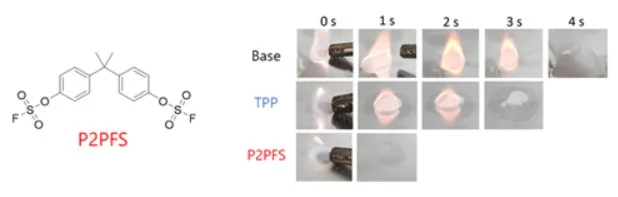
이 당시 출원된 전해액 관련 특허를 연구 주체별로 분석해 보면, 대기업을 중심으로 기술개발이 활발히 진행된 반면 중소기업의 경우 가장 낮은 특허 출원률을 보이고 있음을 확인할 수 있다. 따라서, 당시 신생 벤처기업이 전해액 시장으로 진입하기 위해선 대기업과 다른 新기술을 개발하거나, 대기업·대학·연구기관 등과 파트너십을 통해 기술경쟁력을 강화하는 전략을 펼쳐야 했을 것으로 추론된다.
<그림 19. 전해액 관련 연구주체 동향(출처: 중소기업기술정보진흥원)>
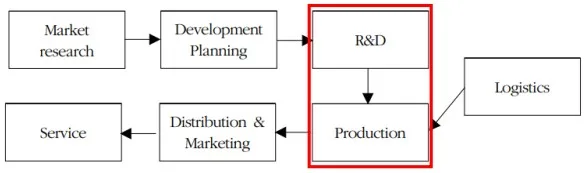
이러한 상황 속에서 창업초기(도입기) 엔켐은 오픈 이노베이션을 통해 첨가제 선진 기술을 확보하였다. 첨가제 기술 확보에 집중한 이유는 전해액의 메인원료인 리튬염은 LiPF6 가 주류지만, 첨가제의 경우 셀 제조업체의 요구에 따라 물질의 종류와 혼합비율이 다양하기 때문이다. 즉 전해액 제조업체는 이차전지 개발 Spec 에 맞는 첨가제를 개발하여 최적의 조합을 찾는 것이 핵심 경쟁력이다.
이때 주목할만한 점은 엔켐은 혁신의 효율성을 높이고자 중간 매개체를 통해 오픈 이노베이션의 파트너를 찾았다는 점이다. 대기업에 비해 정보원이 제한적이고 중요한 정보를 수집할 재정적 자원이 부족한 중소기업은 누구와 협력할지 탐색하고 결정하는 것에 어려움을 겪기에 중재자를 통한 오픈 이노베이션 전략이 유용하다(이성주 외, 2010). 이에 엔켐은 전략적으로 한국산업기술진흥원의 대-중소기업 기술이전 사업에 참여하여 LG 화학의 첨가제 관련 특허 6 개를 이전 받게 된다.
<그림 20. 중소기업의 성공적인 오픈 이노베이션을 위한 중재자 역할
(출처: 이성주 외, 2010)>
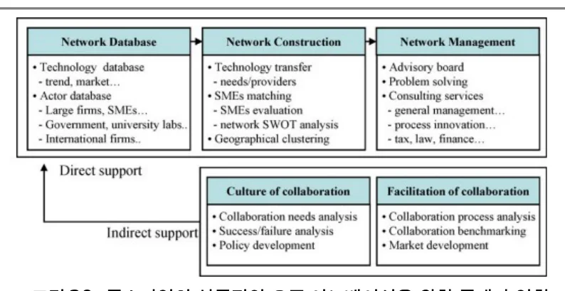
특허 이전을 통해 엔켐은 고기능성 첨가제 개발 및 사업화 능력을 향상시켰다.
그 중 하나는 SEI(Solid Electrolyte Interphase)가 알맞게 형성되도록 하는 첨가제를 상용화한 것이다. SEI 는 리튬이온 배터리의 성능을 거론할 떄 빠지지 않고 나오는 것으로 최초 충천과정에서 음극 표면에 자연스럽게 생기는 얇은 보호 피막을 말한다. 이 피막은 리튬이온이 원활하게 이동할 수 있도록 도와주며 음극에서 나오는 전자를 막아 전해액이 더 이상 분해되지 않도록 하는 역할을 한다. SEI 층이 균일하지 않으면 리튬이온의 흐름을 방해해 배터리 성능이 떨어진다. 또한 SEI 층이 과도하게 형성되면 리튬 소모량이 증가하면서 충방전 효율을 떨어뜨려 배터리 수명도 감소한다(강희종, 2024; Battery Inside, 2022)
<그림 21. SEI 역할(출처: Battery Inside)>
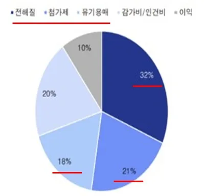
그러나 전해액에서 가장 많이 사용되는 카보네이트계 유기 용매에 의해 형성되는 SEI 막은 전기화학적 또는 열적으로 안정되지 못하여 충·방전이 진행됨에 따라 증가된 전기화학적 에너지 및 열에너지에 의해 쉽게 붕괴될 수 있다는 문제점이 있다. 즉 SEI 막이 계속적으로 재생성 되면 전지 용량이 감소되고 전지 수명 성능이 저하되는 것이다. 이러한 문제점을 해결하기 위해 엔켐은 에스테르 화합물 화합물 2 종을 혼합한 전해액 첨가제를 개발·상용화하였는데, 전자 흡인 작용이 강한 불소를 포함하였기에 전지 초기 충전 시 유전율이 높고 리튬 이온 전도성이 우수한 SEI 막을 형성할 수 있었다. 엔켐이 상용화한 첨가제는 기존 전지에 비해 높은 방전 용량 유지율을 나타내 전지 수명을 향상시킨다는 특징이 있다.
결과론적으로 봤을 때, 특허 이전은 엔켐과 LG 화학 모두에게 이익이 되는 전략이었다. 전해액은 이차전지의 핵심 소재이지만, 상대적으로 시장 규모가 작아 대기업인 LG 화학이 직접 진입하기엔 수익성이 낮았고, 엔켐은 성공적 시장 진입을 위해 원천기술 확보가 필요했던 상황이었기 때문이다. 즉, 특허이전을 통한 기술개발·상용화로 LG 화학은 품질 좋은 전해액을 납품 받을 수 있었으며, 엔켐은 선진 기술을 내재화해 양 기업 모두 win-win 하는 결과를 가져왔다.
다만, 이러한 오픈 이노베이션 전략이 성공했던 이유는 내부에 축적된 흡수역량이 뒷받침되었기 때문으로 추론할 수 있다. 다른 기업의 지식 및 기술을 받아들여 혁신활동을 수행하기 위해서는 외부 지식을 빠르게 흡수할 수 있는 조직의 학습 능력 및 개방성 등과 같은 역량이 필요하다(윤병주, 이성주, 2010).
엔켐은 국내 최초 전해액을 개발·생산한 제일모직 출신 연구원들이 주축이 되어 창업된 회사로 전해액 기술에 대한 뛰어난 이해를 가지고 있었다. 즉, 전해액 기술에 대한 높은 이해도와 R&D 능력으로 표현되는 엔켐의 흡수역량은 오픈 이노베이션 전략을 성공시키는 밑바탕이 되었다고 볼 수 있다.
5.2.2 공동연구를 통한 기술 획득
엔켐은 대기업뿐만 아니라 KAIST, 성균관대학교 등 국내 유수대학 및 한국전자통신연구원, 화학연구원 등과 같은 외부기관과도 공동 기술개발 프로젝트를 진행했다. 대표적인 사례는 한국전자통신연구원(ETRI)과 협업하여 세계 최초 불소화황산화물계 난연 첨가제를 개발한 것이다. 기존 투입하는 상용 인산계 첨가제는 화재 지연 특성이 있으나 많은 양을 투입해야 되고 전극과 전해질 간 계면 저항이 증가하는 등 사용에 제한이 있었다. 그러나 공동 개발한 불소화황산화물계 난연 첨가제는 소량만 활용하더라도 난연 특성 2.3 배, 이차전지 성능을 160% 향상시켰다.
<그림 22. 세계 최초 불소화황산화물계 난연 첨가제(좌),
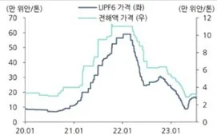
기존 전해액 대비 개선된 열적 특성 결과(우) )(출처: EREI 보도자료)>다만, 엔켐은 LG 화학, 한국전자동신연구원 등과 같은 외부 기관과의 협업활동에만 온전히 의지하지는 않았다. 협업을 진행하는 와중에도 내부 흡수역량을 증대시키는 선순환 구조를 구축하기 위해 기업부설연구소를 설립하고 기술 내재화를 병행하였다.
5.2.3 성공적 시장진입을 위한 고객 니즈 파악
앞서 2 장에서 살펴본 바와 같이 전해액 산업은 기술 집약적이며 규모의 경제를 갖는 자본집약적 산업으로 선천적으로 큰 규모의 기업들에게 유리한 반면 신생 벤처기업이 시장에 진입하여 성장하기에 한계가 있다. 특히, 가연성 소재인 전해액은 이차전지 사용자의 안전 및 성능과 직접 연관되므로 확실한 레퍼런스를 가진 기업이 선호된다.
이에 엔켐은 창업초기 다양한 레퍼런스를 쌓기 위해 가장 큰 배터리 시장을 가지고 있는 중국시장에 먼저 진출한 후 한국시장에 역진출하는 전략을 선택함과 동시에 고객 니즈 파악 및 인지도 향상을 위해 특정 major 기업을 타겟하는 전략을 세운다. 주류 시장에 합류하기 위해선 최고 기업에 납품하는 실적을 쌓아야 한다는 믿음 아래, 국내 최초로 리튬이온배터리 양산에 성공한 글로벌 탑 이차전지 제조 기업인 LG 화학을 고객사로 만들고자 노력한다. 엔켐은 수개월간 LG 화학의 자잘한 요구 조건들까지 모두 맞춰주면서 전해액을 고도화하였다.
당시 LG 화학은 고출력 전기차용 전해액을 값싸게 만드는 기술적 허들을 넘지 못하고 있었는데 특허이전과 공동연구를 통해 쌓은 고기능성 첨가제 개발로 이를 해결한 것이다. LG 화학의 높은 기술 요구 수준을 엔켐이 모두 충족하자 LG화학은 2 세대 전기차 배터리 개발을 위한 전해액 협력 기업으로 엔켐을 선택한다. LG 화학 협력사라는 타이틀을 얻게 된 엔켐은 안전성이 담보되었다는 시장 인식과 함께 전해액 매출이 기하급수적으로 증가하였다. 이에 창업 5 년만에 빅7 이차전지 회사 중 4 개 기업을 고객사로 확보하게 되었으며, 2012 년 2,000만원이였던 매출액을 2018 년 366 억원으로 10 배 이상 성장했다.
사례연구 목적인 Research Question 1 번에 대한 결론은 엔켐은 대기업이 진입하기 어려운 niche market 을 잘 선정하였으며, 고도의 흡수역량을 바탕으로한 오픈 이노베이션 전략을 통해 세계 최초로 2 세대 전해액 개발 및 상용화라는 제품혁신을 이뤄냈다. 또한, 고객 니즈 파악 및 인지도 향상을 위해 Major 기업을 공략하는 전략을 선택함으로써 단기간에 주류 시장에 진입할 수 있었다.
5.3 시장 성장기: 독보적 시장경쟁력 확보를 위한 밸류체인 혁신 전략
5.3.1 밸류체인 특성을 고려한 제조 공정 수직계열화
제4 장에서 살펴본 바와 같이 미세조정형(Integral) 아키텍처의 특성을 가진 전해액은 고객이 원하는 제품 기능을 핀포인트로 실현해야 하기 때문에 공정 상의 최적 설계가 요구된다. 즉, 목표 기능 달성을 위한 공정 미세 조정이 중요한 산업이다. 이에 엔켐은 국내에서 유일하게 개발부터 양산까지 전 공정을 수직 계열화함으로써 고객사의 기술적 요구에 신속하게 맞춤 대응하였다. 통상적으로 전해액 제조는 기술개발, 합성, 정제, 승인, 양산으로 세분화되어 각각의 회사들이 제공한다. 그러나 엔켐은 전해액 개발부터 실사까지 모든 프로세스를 당사에서 원스톱(One-stop)으로 제공함으로써 제품 개발 시간과 비용을 단축하였다. 이는 엔켐이 창업초기부터 오픈 이노베이션을 통해 다양한 첨가제 개발에 대한 역량을 키웠을 뿐만 아니라 자체적으로 첨가제 합성팀을 구성하여 신규 첨가제를 개발, 고객에게 제안할 수 있는 기술력을 보유하고 있었기 때문에 가능한 것이다.
<그림 23. 엔켐의 생산 공정 최적화(출처: 엔켐 IR 자료 참고, 본인작성>
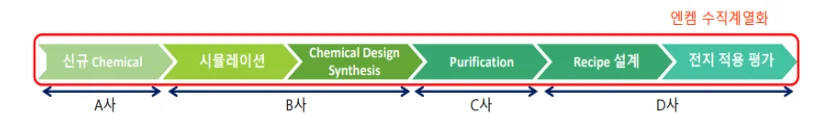
<그림 24. 연구개발과정의 혁신 프로세스
(출처: 윤병윤, 이성주(2010), 중소기업오픈이노베이션 모형)>
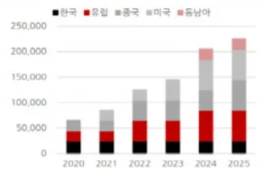
또한, 전해액 성능에 영향을 미치는 각 요소는 자사 제품을 원료로 사용하는 이차전지 제조사와도 밀접한 연관이 있다. 따라서 사내뿐만 아니라 이차전지 제조사의 제품 생산 환경에서도 파라메터 최적 설계가 동시에 요구된다. 이에 엔켐은 제조 공정 수직계열화를 통해 사내 설계 파라메터 최적화를 도모하는 한편, 개발 담당자를 이차전지 제조사에 파견하여 제품 판매를 통해 얻은 정보를 연구자에게 피드백하여 개량하는 선순환 구조를 구축하였다. 이러한 내·외부 공정 수직계열화는 가격경쟁력의 우위를 선점할 뿐 아니라 급변하는 고객 니즈에 발맞춰 새로운 제품을 제시하는 기업으로 거듭나는 자양분이 되었다.
5.3.2 전·후방산업 글로벌 공급망 최적화
전해액 원가에서 원자재가 차지하는 비중은 70%로 원자재 가격 변동에 따라
전해액 기업들의 수익성이 크게 흔들리는 구조다. 특히, 리튬염은 전해액 가격과 높은 상관관계가 존재하는데, 가격 변동의 폭이 넓다는 risk 가 있다.
<그림 25. 전해액 원가구조(좌), 리튬염과 전해액 가격 추이(우)
(출처: IBK 투자증권, WIND, 상상인증권)>
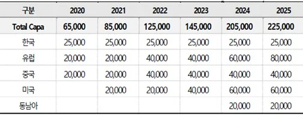
이에 엔켐은 지분확보 및 합작법인(JV) 설립을 통한 핵심원료 내재화로 중장기적인 원자재 공급체계를 확보한다. 엔켐은 전 세계 1 위 리튬염 제조기업인 중국 DFD(두-플루오라이드케미컬)에 15% 수준의 지분투자와 합작법인 설립을 통해 일정비율의 리튬염 우선매수권을 확보했다. 또한, 국내 리튬염 유통기업인 중앙디앤엠 및 중국의 DFD 와 협력하여 새만금에 5 만톤 규모의 리튬염 제조 시설을 구축 중에 있는데, 리튬염 내재화를 통해 향후 5%의 영업이익이 개선될 것으로 전망하고 있다(한국경제, 2023). 이와 더불어 엔켐은 세계 1 위 용매 제조회사인 중국 SHIDA 그룹과 합작법인을 설립하여 안정적인 용매 Capa 를 확보하였다. 이와 같이 후방산업 value-chain 을 수직 계열화를 통한 안정적인 원자재 확보는 원가경쟁력을 강화하여 궁극적으로 기존 사업자들과 경쟁을 돌파해 나갈 수 있는 강력한 자산이 될 것이다.
엔켐은 후방산업뿐만 아니라 전방산업인 이차전지 제조기업의 수요에 맞춰 글로벌 공급망을 최적해 나간다. 전해액은 폭발 및 변질 우려가 있어 신선도 유지가 필수며, 제조 후 6 개월 이내에 사용해야 하고 25 도씨 이하로 보관해야 하는 특징이 있다. 또한, 전해액은 위험물·독극물로 분류되어 특수용기를 사용해야 하기 때문에 거리에 따라 물류비가 기하급수적으로 증가하는 단점이 있다. 즉, 이차전지 고객사와 근접한 곳에서 최단 시간에 공급하는 것이 전해액 제조기업의 경쟁력이다. 이에 엔켐은 전방산업 고객의 글로벌 공급망에 기초하여 세계에서 유일하게 4 대 지역에 거점을 구축한다.
<표 4. 국내 전해액 기업의 글로벌 거점 구축 현황
(출처: 홈페이지 참고, 본인작성)>
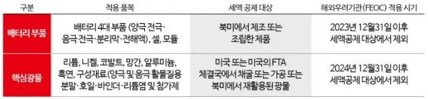
<그림 26. 엔켐 연간 Capa 추이(단위: 톤/연)
(출처: 엔켐 IR 자료, SK 증권)>
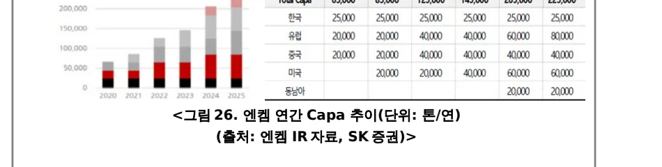
생산지별 현지 공급을 통한 고객사 대응 능력 강화는 제품 성능에 민감한 고객의 만족도를 증가시켰을 뿐만 아니라 현지 생산, 납품을 통한 원가절감 극대화로 시장 점유율이 상승하는 효과를 가져오게 되었다. 특히, 엔켐은 미국 공장 先진출로 인해 미국 인플레이션감축법(IRA)에도 대응, 전해액 원료 탈 중국화를 노리는 북미 고객의 수요를 충족시키면서 주가가 급격히 상승하였다. 미국 인플레이션 감축법 규정 상 배터리 부품인 전해액을 중국산으로 사용할 경우, 보조금 대상에서 제외되기 때문이다. 국내 경쟁사들 또한 현지진출 계획 중에 있으나, 인허가·인력관리·운영 노하우 측면에서 시행착오가 예상되는 바, 원활한 현지 공급은 2025 년으로 추정되므로 엔켐은 기존 미국 공장에서의 안정적인 양산이력을 바탕으로 현지 고객사 물량에 적극 대응이 가능할 것으로 전망되고 있다. 향후 미국 배터리 시장 규모가 유럽과 중국을 합친 것보다도 더 커질 것이라는 전망을 고려 했을 떄(박순혁, 2023), 미국시장에 선진입하여 글로벌 공급망의 경쟁우위를 점한 것은 중국을 제외한 세계 점유율 1 위 기업인 엔켐이 향후 중국기업과 경쟁에서도 우위를 확대하는 기회가 될 것이다.
<그림 27. 인플레이션감축법(IRA) 세액공제 규정(출처: 하이투자증권, 아시아경제)>
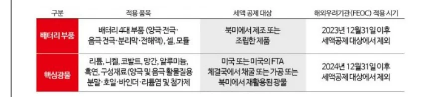
사례연구 목적인 Research Question 2 번에 대한 결론은 엔켐은 수직계열화 및 전후방산업 글로벌 공급망 최적화를 통해 밸류체인을 잘 구축하였다는 것이다.
이러한 공정혁신은 제품 개발 및 생산 시간을 단축하여 고객 만족도 증가라는 효과를 가져왔으며 엔켐이 단기간에 국내 1 위, 세계 4 위라는 시장 점유율 확보라는 결과를 가져왔다.
제6 장. 결론 및 시사점
엔켐 사례를 통해 자본력이 부족한 소규모 중소기업 일수록 창업 시점부터 자사가 어떤 분야에 흡수역량이 뛰어난지 파악하는 것이 선행되어야 하며, 흡수 역량이 충분히 발휘될 수 있는 niche market 을 설정하여 선택과 집중을 하는 것이 중요한 전략임을 알 수 있었다. 또한 기술집약적 성격을 지닌 소재산업 특성상 창업 초기 중소기업은 선진 기술 확보를 위해 오픈 이노베이션 전략을 전략적으로 취하는 것이 유용한데, 정보의 한계라는 단점을 보완하기 위해 ‘중재자’를 활용하는 것이 유리한 전략임을 확인하였다. 시장에 진입한 이후로는 독보적인 시장경쟁력 확보를 위해 내외부 공정혁신과 공급망 최적화 전략이 매우 중요하다는 점 그리고 이를 뒷받침하는 기술 역량을 끊임없이 개발해 나가는 것이 매우 중요함을 확인할 수 있었다. 즉, 본 사례를 통해 소재분야에 종사하는 중소기업이 성공적으로 시장에 진입하기 위해서는 흡수역량을 바탕으로 niche 마켓을 선정하고, 제품혁신과 공정혁신 둘 중 하나에만 집중하는 것이 아닌 양면 모두에 집중해야 된다는 시사점을 얻을 수 있었다.
그러나 본 연구는 엔켐의 전해액 관련 기술만 다뤘다는 한계가 있다. 엔켐이 미래 먹거리로 NMP Recycle 사업과 전고체 전해액 개발에 집중하고 있다는 점을 고려할 때 핵심역량에 근거한 신규 산업 진출 전략을 탐색할 필요가 있다. 또한, 수직계열화에 따른 리스크 관리 전략에 대한 논의가 추가적으로 필요할 것으로 사료된다. 수직계열화는 전방산업 매출이 크게 늘어나면 관련 소재와 원자재를 생산하는 회사들의 실적이 함께 좋아지는 선순환이 나타나지만, 반대로 전방산업이 크게 위축되는 시기에는 전 계열사가 함께 어려워 질 수도 있다는 단점이 있다. 실제로 최근 전기자동차 산업이 케즘에 빠짐에 따라 후방산업인 엔켐의 영업이익과 주가 역시 하락하였다. 따라서 수익계열화에 대한 엔켐의 리스크 관리 전략에 대해 구체적으로 살펴보는 것도 의미 있는 시도라 판단된다.
Reference
- Sungjoo Leea, Gwangman Park, Byungun Yoon, Jinwoo Park. (2010). Open innovation in SMEs—An intermediated network model.
- Annemien Pullen, Petra De Weerd-Nederhof, Aard Groen, Michael Song, Olaf Fisscher. (2009). Successful Patterns of Internal SME Characteristics Leading to High Overall Innovation Performance.
- Nurulhasanah Abdul Rahman, Zulnaidi Yaacob, Rafisah Mat Radzi. (June 2016). An Overview of Technological Innovation on SME Survival: A Conceptual Paper.
- Franco Malerba and Luigi Orsenigo. (1997). Technological Regimes and Sectoral Patterns of Innovative Activities.
- Pavitt, K. (1984). Sectoralpatterns of technical change: towards a taxonomy and a theory. Research policy,13(6), 343-373
- Value Chain Analysis for Assessing Competitive Advantage. (1996). Joseph G. San Miguel
- Advantage, C. (1996). Value Chain Analysis for Assessing Competitive Advantage.
- James M Utterback and William J Abernathy. (1975). A dynamic model of process and product innovation.
- James M Utterback and William J Abernathy. (1978). Patterns of Industrial Innovation.
- James M Utterback. (1994). The Dynamics of Innovation.
- Michael Eugene Porter. (1985). Competitive Advantage: Creating and Sustaining Superior Performance.
- Michael Eugene Porter. (2008). The Five Competitive Forces That Shape Strategy.
- SJohn K. Shank, Vijay Govindarajan. (1993). Strategic Cost Management: The New Tool for Competitive Advantage.
- 구철모, 최정일. (2008). 조직의 흡수역량이 기업성과에 미치는 영향에 대한 실증연구.
- 김헌. (1999). 기술혁신이 생산전략과 생산활동에 미치는 영향에 관한 연구.
- 김진한, 박진한, 정기대. (2013). 중소기업의 기술협력에서 흡수역량의 역할.
- 윤병윤, 이성주. (2010). 중소기업의 오픈 이노베이션 모형.
- 이영기, 김광만. (2008). 리튬 2 차전지용 전해질 소재의 개발 동향. 보고서
- Marketsandmarkets. (2020). Lithium-ion Battery Market Size, Sharem Statistics and 28 Industry Analysis Report.
- LG 에너지솔루션. (2023). 엔솔피디아: 100 페이지로 읽는 배터리의 모든 것.
- 삼정KPMG 경제연구원. (2023). 배터리 생태계 경쟁 역학 구도로 보는 미래 배터리 산업.
- 중소기업기술정보진흥원. (2024). 고성능 이차전지 전해질 첨가제.
- 중소기업기술정보진흥원. (2022). 고전압·고출력에서 고온수명 안정화 전해액 첨가제.
- 중소기업기술정보진흥원. (2024). 중소기업 전략기술 로드맵 「탄소중립 이행: 이차전지」
- 과학기술통신부. (2022). 국가전략기술 육성방안.
- 산업통상자원부. (2023). 이차전지 전주기 산업경쟁력 강화 방안.
- 산업통상자원부. (2022). 이차전지 산업 혁신전략.
- 연구개발특구진흥재단. (2021). 글로벌 시장동향보고서-배터리 첨가제 시장.
- 비피기술거래. (2023). 이차전지 소재관련 산업분석보고서.
- 비피기술거래. (2020). 2 차전지 산업분석보고서 2020.
- 과학기술일자리진흥원(2018). 리튬이차전지 소재 기술동향.
- 중소기업기술정보진흥원. (2023). 중소기업 기술국산화 전략품목 상세분석 <전기전자>
- SNE Research. (2020). 리튬이온 2 차전지 전해액 기술 동향 및 시장 전망 (~2025)
- 한제윤, KB 증권. (2023). 엔켐 고래 싸움에 감춰지지 않는 미소.
- KDB 미래전략연구소 산업기술리서치센터, 조윤상, 하태원, 정승원. (2019.5). 리튬 이차전지 시장 및 기술동향 분석과 대응 방향.
- 최보영, 교보증권. (2020.9). Industry Report 2 차전지.
- . 엔켐. (2023). 엔켐 사업보고서. 서적
- H Chesbrough. (2006). Open business models: How to thrive in the new innovation landscape.
- 후지모토 다카히로. (2009). 모노즈쿠리 경영학.
- 시라이시 다쿠. (2021). 처음읽는 2 차전지 이야기.
- 정경윤, 이상민, 이영기, 정훈기. (2023). 이차전지 승자의 조건.
- 박순혁. (2022). K 배터리 레볼루션.
- 안재형, 석동훈, 렛유인연구소. (2020). 한권으로 끝내는 전공 면접 2 차전지 기본편.
- 지일용. (2023). 기술혁신의 경제와 경영. 29 웹페이지
- 강희종. (2024.1.9). 아시아경제 [배터리완전정복](18)'IRA 수혜주' 전해액, 中 따라잡을 절호의 기회. https://www.asiae.co.kr/article/2024010413214052528
- 국가과학기술연구회. (2021.3.11). [출연(연) 과학기술, 꿰어야 보배] 29 탄: 폭발 없는 차세대 전지 전고체 배터리. https://blog.naver.com/nststory2014/222271454714
- 한국전자통신연구원. (2018.2.9). 이차전지 전해액 개발을 위해 어벤져스가 다시 뭉쳤다. https://www.etri.re.kr/webzine/20180209/sub05.html
- 한국전자통신연구원. (2022.10.20). 세계 최초 불소화황산물화계 난연 첨가제 개발(보도자료)
- 안수정. (2017.7.12). 월간인물. 오정강 ㈜엔켐 대표이사 - 오로지 기술, 전해액 제조기술의 중심에 서다. https://www.monthlypeople.com/news/articleView.html?idxno=10109
- 한국경제. (2023.10.24). 오정강 대표 "전해액 세계1 위 GO…엔켐과 리튬염 수직계열 관계사 연결고리 확대". https://www.hankyung.com/article/2023102424515
- 전자신문. (2021.10.5). [기술독립강소기업]<2>국내 최초 전기차용 전해액 양산 강소기업 '엔켐'. https://www.etnews.com/20211005000170
- 삼성SDI. (2020.11.4). 리튬이온을 위한 베스트 드라이버 ‘전해액’. https://www.samsungsdi.co.kr/column/technology/detail/56541.html? listType=gallery
- Battery Inside. (2022.2.16). 리튬이온의 출퇴근 수단, 전해질 https://inside.lgensol.com/2022/02/%EB%A6%AC%ED%8A%AC%EC%9D %B4%EC%98%A8%EC%9D%98-%EC%B6%9C%ED%87%B4%EA %B7%BC-%EC%88%98%EB%8B%A8-%EC%A0%84%ED%95%B4%EC %A7%88/
- 삼성증권. (2020.8.28). 2 차 배터리(전지)의 개념과 미래 발전 가능성. https://www.samsungsdi.co.kr/column/technology/detail/56541.html? listType=gallery
- 이세영. (2023.5.9). [K-배터리 톺아보기/⑤전해액] 엔켐·동화기업, 中·日 틈새서 연구개발 '가속도' http://www.goodkyung.com/news/articleView.html?idxno=206972 30